01Research
Find the opening
We work through your customers, your competitors, the ads you are running now and the ones that used to win, looking for the angles nobody in the category is using.
For subscription apps and digital-first brands already buying paid traffic. We find the angles your category is not using, then build enough executions to prove whether they work.
Every growth team running paid social hits the same wall. Performance decays, someone ships another version of the ad that used to work, and the account slowly stops learning anything new.
The bottleneck is rarely production capacity. It is the supply of ideas worth producing.
A repeatable loop that turns customer insight and campaign results into the next set of ideas worth testing.
We work through your customers, your competitors, the ads you are running now and the ones that used to win, looking for the angles nobody in the category is using.
Each concept is a stated hypothesis about what will move your customer, with the reasoning attached, not a request for another variation.
Every concept becomes several meaningful executions across hooks, visuals, formats and opening frames, so one idea gets a fair test rather than a single shot.
What happens in market decides the next drop: iterate the winner, or retire the idea and test a different one.
An illustrative walkthrough of the method, using a category we work in. It is not a client engagement and carries no performance claims.
A subscription language-learning app. Paid social currently leads with streaks and gamification.
Nobody installs a language app to build a streak. They install it with a moment in mind: a trip, a partner's parents, a job interview. Cancellations say the same thing from the other end, that people leave still unable to do anything real.
We would test whether naming the moment someone installed for does more on cold traffic than advertising the habit meant to get them there.
"Order the coffee." Small, specific, real-world moments a learner can complete after a defined amount of study.
Six. Two static moment cards, two motion hooks that open on the moment rather than the app, one product demonstration tying a single lesson to the moment, and one comparison against the streak-led message currently running.
The moment and the timeframe attached to it, with format and product framing held steady, so the result points at one variable rather than at everything at once.
Whether a moment separates from the streak control, and if one does, which timeframe people believe and the product can actually keep. Either result decides what the next drop tests.
Three concepts, from the insight to the executions. Each one shows what we noticed about the audience, the bet we would put in market, the variable the executions hold under test, and the decision the result would drive. Concept projects, built to show method. Not client campaigns, and no performance claims.
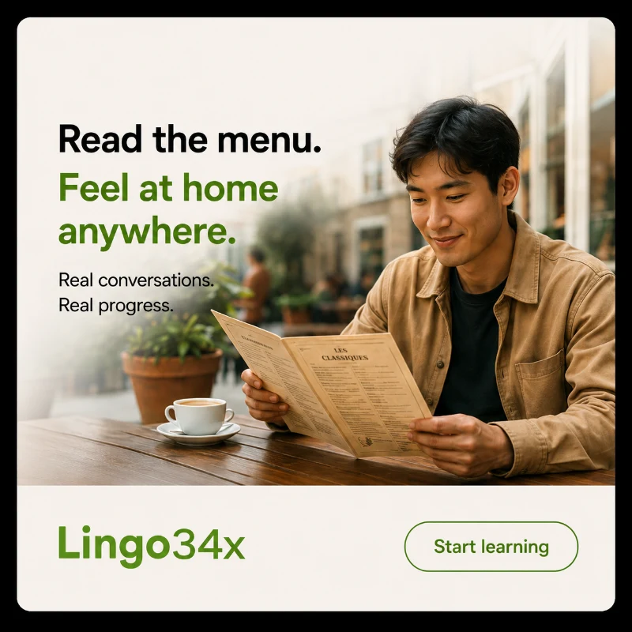
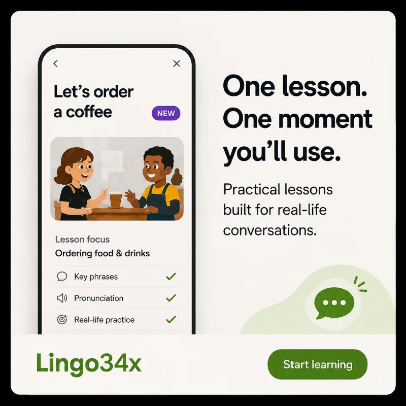
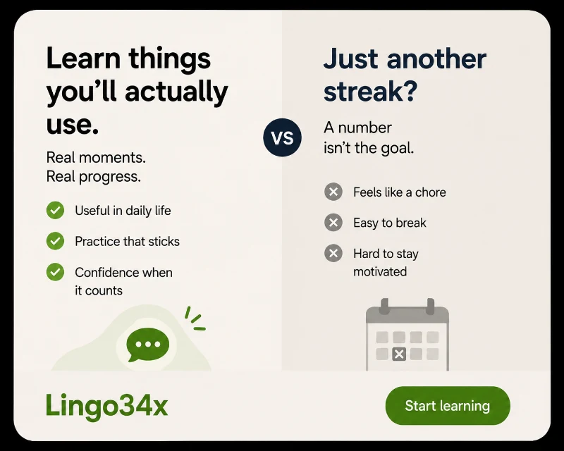
Streaks measure effort. A moment measures arrival. The whole category sells the climb, so the one brand showing the summit looks different by default. The constraint is that the timeframe has to be one the product can keep: an acquisition promise the onboarding cannot deliver only buys a cancellation six weeks later.
The moment, and the timeframe attached to it. Ordering a coffee, reading a menu, a conversation in transit, each with and without a stated number of weeks. Format and product framing are held steady so the moment is the only thing under test.
If a moment separates, the next drop varies the timeframe against it to find the shortest claim people believe and the product can keep. If nothing beats the streak control, the insight is wrong and we return to research rather than producing more of the same idea.
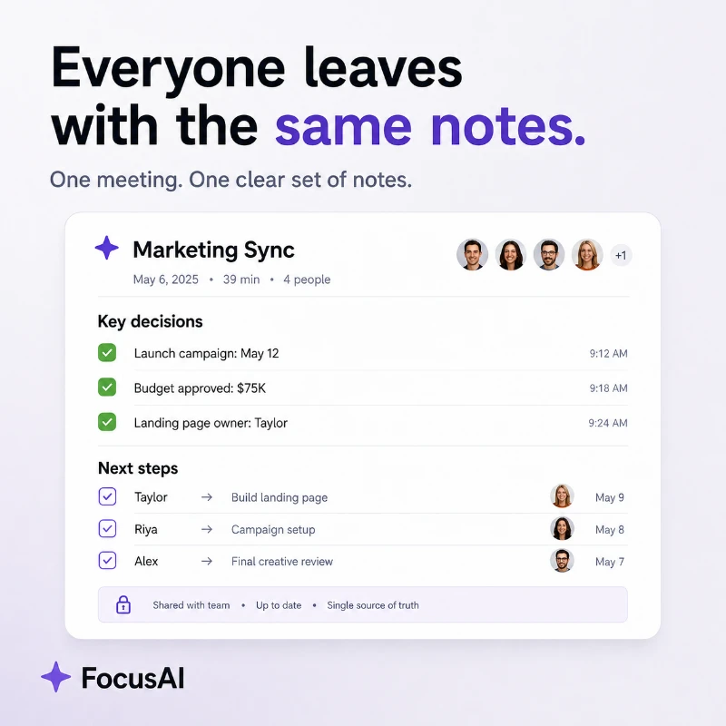
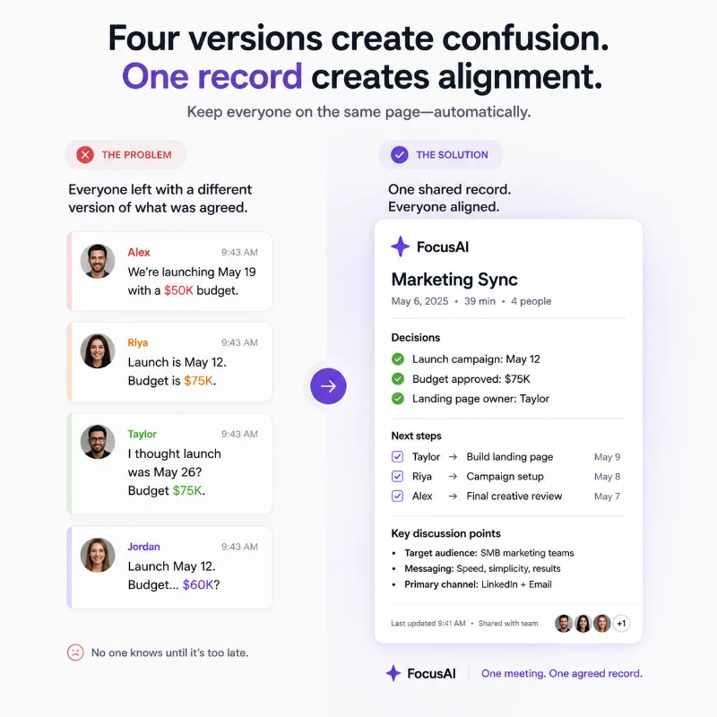
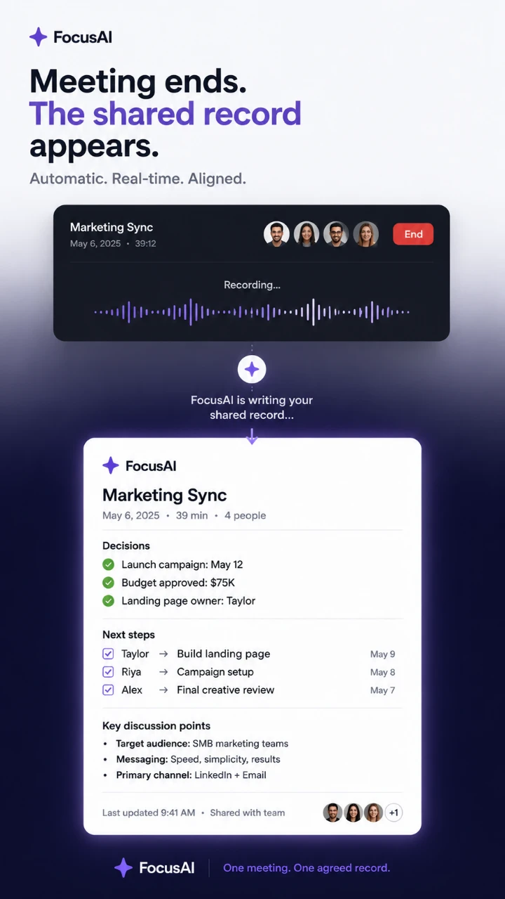
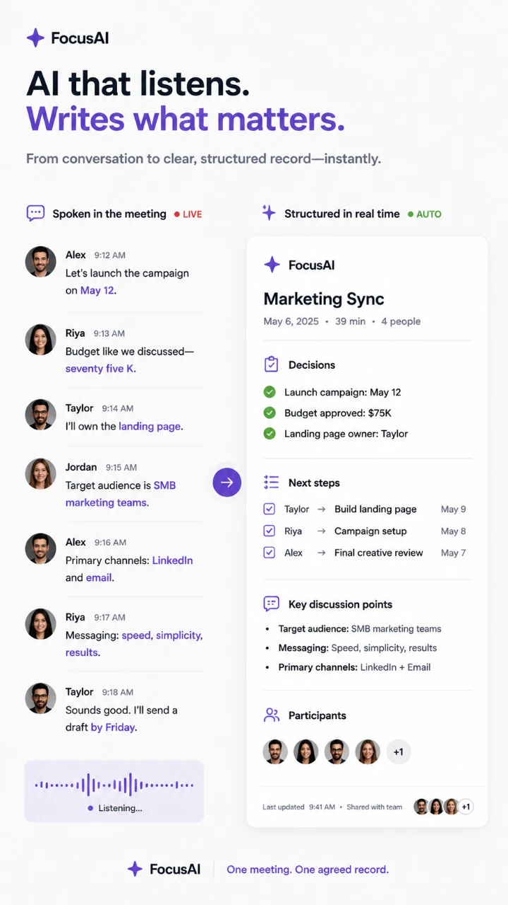
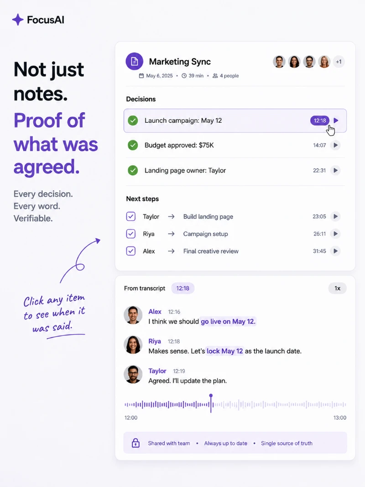
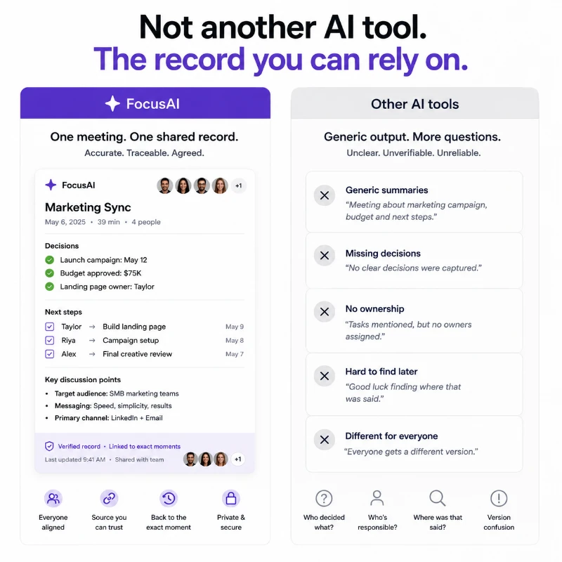
This is a mechanism claim, not a mood. It can be demonstrated on screen in a few seconds, a buyer can check it, and someone comparing three similar tools can act on it. Product-led proof also survives the sceptical viewer who discounts an emotional appeal outright.
The proof type. The artefact on its own, the mechanism that produces it, a side-by-side of four recollections against one set of notes, and a timed demonstration. The claim is held constant while the evidence for it changes.
If the artefact alone carries it, the product can lead every execution and the pipeline goes static-first, which is cheaper and faster to iterate. If the mechanism is the part that convinces, motion becomes the primary format and the next drop tests how much process to show before the payoff.
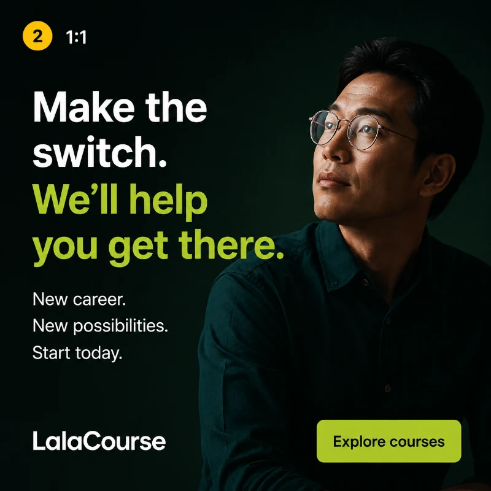
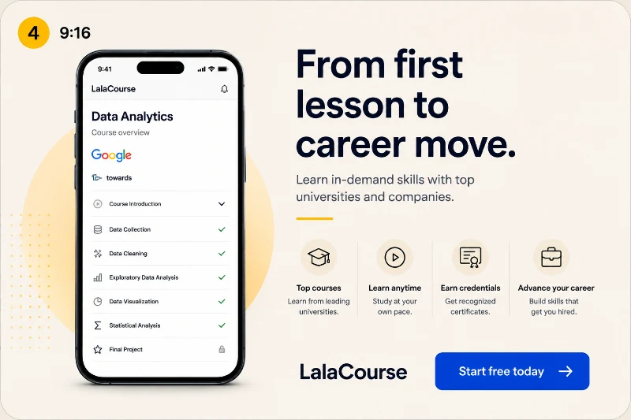
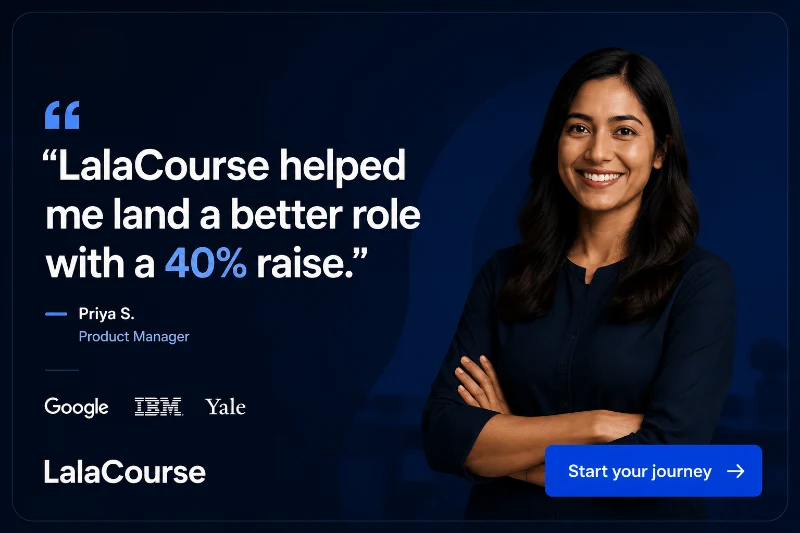
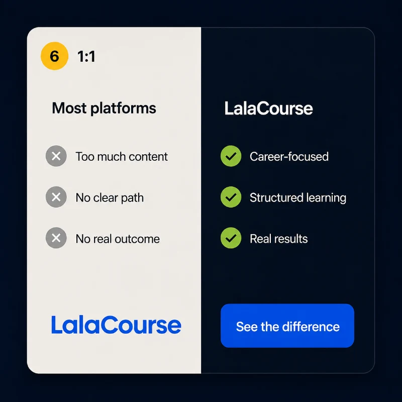
It attaches the product to a milestone the buyer already has a deadline for, which is a reason to start now rather than a reason to browse. Catalogue size is a feature the whole category shares, so it cannot separate anyone from anyone.
The outcome frame and who it is aimed at: job-ready by a date, a career switch, an evening routine, a first-lesson-to-move narrative, a peer's result, and a straight comparison. Brand, palette and layout system are held steady so only the outcome angle moves.
If one outcome frame separates, it becomes the headline claim and the next drop tests how specific the timeframe can be before it stops being believed. If they all sit level, the outcome angle is not the lever and we would test the objection or the format instead.
Strategic concepts first. Useful creative volume second.
Three strategic concepts. 18 ready-to-test creatives. 7 days.
Four new concepts. Up to 30 creatives. Every month.
Kalvano does not run media, manage accounts, build websites or take on general branding. The studio points at one thing: better paid-social creative. Your media buyers, in house or external, run the campaigns, and we build from their results.
Kickoff call. We take access to your current creative and whatever performance data you can share.
Research. Your customers, your competitors, your live ads and your past winners.
Concepts. Three distinct hypotheses, each with the reasoning behind it.
Production. 18 ready-to-test creatives and a recommended testing structure.
One revision round, then the results decide what is worth doing next.
Kalvano works with subscription apps and digital-first brands already investing in paid acquisition. The common thread is not the sector. It is a real need for fresh creative ideas and the budget to test them.
If you are not currently spending on paid acquisition, Kalvano is probably too early for you. The work only pays for itself when there is a campaign to test it in.
Kalvano works as an external creative experimentation team: research, ideas, ready-to-test production, and a clearer view of what to do next.
A designer adds capacity. It does not add angles. Kalvano brings the research and the creative direction as well as the output, without a headcount decision.
Freelancers execute a brief well. Kalvano writes the brief, and takes responsibility for whether the idea was worth testing in the first place.
No media retainer, no account layer, no twelve-week onboarding. One narrow service, bought for US$1,250, delivered in a week.
Performance signals become the brief for the next round, so month three is built on what months one and two proved.
Subscription apps and digital-first brands already investing in paid acquisition. Selected financial and trading brands can also be a fit where the work matches the performance-creative offer.
No. We are specialists in creative strategy, production and iteration. Your media buying team, in house or external, runs the campaigns and we build from their results.
Three strategic advertising concepts, 18 ready-to-test creatives, a recommended testing structure, a 7-day turnaround and one revision round.
One advertising idea should not be judged from one execution. We develop meaningful versions through different hooks, visuals, formats, opening frames and messaging, so your team can test the idea properly and iterate what works.
Access to your current creative, whatever performance data you can share, and one kickoff call. If there is a brand guideline or existing footage, we will use it.
Yes. If you already have creator footage or product video we will build with it. We do not currently source creators or run shoots.
Static, motion, product demonstrations, testimonial concepts, comparison concepts and whatever else your paid-social programme needs. The format follows the advertising hypothesis, not the other way around.
That is information, and it is why we put more than one idea into the market at a time. A concept that loses still tells you something about the audience, and that shapes the next round. On a Sprint you keep everything produced. On a Creative Engine, the losing idea is retired and the next drop tests a different one.
You work directly with the person doing the research, the strategy and the creative direction. Specialist production is brought in where a concept calls for it. There is no account layer and no handover to a separate team.
Most engagements start with a Creative Sprint. The first work puts new concepts into your testing pipeline, then the results decide whether an ongoing Creative Engine makes sense.
Tell us what you are testing, where the creative is falling flat, and what your growth team needs next.
A focused first conversation, usually 20 minutes. No long agency process.